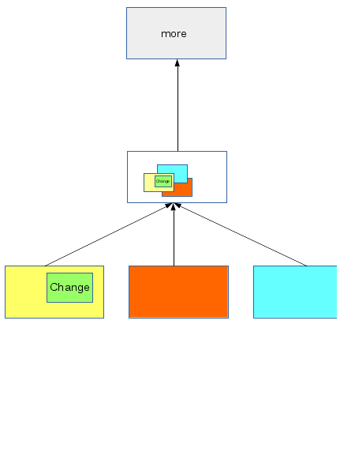

Introduction
libconutils is a small and simple Linux C++ library for providing basic tools to write console graphics applications using ASCII characters. It can be used for example for:
- Programs that need console window oriented interface.
- Text editors
- Console based games
- ...
The library target is to provide a very simple interface for quick development. It does not depend on anything more that the standard C/C++ library. It is NOT a substitute of ncuruses library. If you need something serious and portable for production then you should rather stop here and use ncurses. This is primary written for fun.
- Note
- This library does not implement any kind of thread synchronization. If used in a multi-threaded program be sure to implement synchronization yourself.
Compile and install
To build shared library (default) run:
To build static library run:
To install run:
Default installation prefix is /usr/local You can change it by:
include conutils.h and link with -lconutils and use -std=c++11
To uninstall run:
To clean run:
Usage
There are a few main objects that you will use mostly:
- Char
This represents a single character. Characters can have foreground color, background color and attributes. Characters can also be transparent (invisible). Currently the library defaults to 256 color mode.
- Surface
A surface is basically a rectangle of characters that you write all your images, text or whatever to it. The class provides various operations like resizing, positioning, Z order etc. The surfaces can be linked together in a tree to create a hierarchy of surfaces. When you make a change on a surface of this tree it is recursively propagated to the top updating all surfaces along the way. The surface tree will calculate only the minimal region that needs to be updated to minimize data copying operations. The idea is that when you make changes to a surface you call for an update on this particular surface and not any other. For example if your changed area is the marked in green it will translate to the parent and so on:

- Note
- When a surface is parent to other surfaces you should not make any changes to it different than movement, visibility or adding/removing child surfaces because its buffer will be used to render it's child surfaces. Make content changes only to leaf node surfaces in the tree.
- Screen
The screen is a special type of surface that renders it's contents to the terminal screen. This will be the top surface in a surface tree. The screen is a singleton class.
- Keyboard
This is the class that will fetch your keystrokes. Please note that some terminals send wicked escape sequences for the special keys and some may not work. I'm looking forward to minimize all of those. The keyboard is a singleton class.
Here are some short examples to get you started:
#include <conutils.h>
using namespace conutils;
...
if (!sc || !kb)
... error ...
Surface window(10, 10);
window_bg.fill(
Char(
'.', 2));
child1.fill(
Char(
'a', 3));
child2.fill(
Char(
'b', 4));
window.addLayer(&window_bg, 0);
window.addLayer(&child1, {1, 1}, 1);
window.addLayer(&child2, {2, 2}, 2);
sc->addLayer(&window, {10, 10});
window.render();
kb->waitForKey();
...
For more details check individual class methods.
 1.8.5
1.8.5